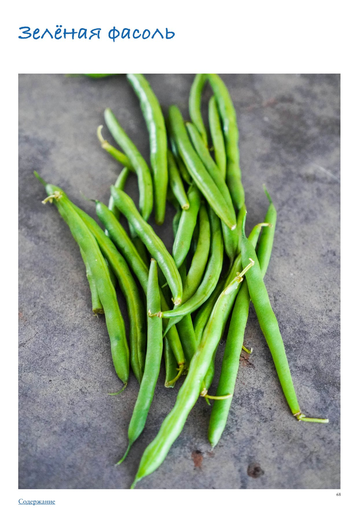

Зеленая фасоль
Доступная круглый год в свежем или замороженном виде, нейтральная по вкусу, а потому отлично сочетающаяся с разными другими овощами, специями и прочими ингредиентами, зеленая (стручковая, спаржевая) фасоль давно и прочно заняла место в повседневном рационе очень многих людей. И если у вас она вызывает стойкую ассоциацию лишь с пресной отварной диетической куриной грудкой, — печально. Давайте узнаем больше об этом прекрасном овоще и научимся готовить его так, чтобы вкус был насыщенным и ярким. Стручковая фасоль представляет собой отдельные виды, а не просто недозрелые стручки обычной фасоли. Даже в спелом виде бобы внутри ее стручков остаются маленькими и мягкими, а сами стручки — сочными и хрустящими. Вне зависимости от вида и сорта, разнясь по цвету, толщине и размеру, стручковая фасоль отличается сладковатым травянистым вкусом и хрустящей текстурой. Сезон стручковой фасоли начинается в середине лета и длится до осени.
Зеленая (французская) фасоль — самая распространенная, довольно тонкая, стручки длиной 10–15 см. Хрустящая, со сладковатым и нежным вкусом. Желтая восковая фасоль — по текстуре и вкусу почти не отличаются от зеленой, только цветом, так как была выведена селекционерами как сорт, не содержащий хлорофилла. Может быть с фиолетовыми полосками. Кенийская фасоль — самая тонкая (диаметр стручка менее 5 мм) и нежная, темно-зеленая, с ореховым привкусом. Китайская (змеиная) фасоль — длинные, до 50 см, мягкие и плоские стручки, не хрустят, вкус мягче, чем у обычной зеленой фасоли. Лоби, или романо (полскоплодная) — крупные плоские и широкие стручки, более мясистые, чем у обычной зеленой фасоли, но с тем же вкусом, хрустящие.
Выбирайте не слишком крупную фасоль — чем стручки тоньше и мельче, тем они слаще и более хрустящие. Крупные стручки в готовом виде могут приобретать мучнистую текстуру. Если есть возможность, попробуйте надавить на один стручок в месте, где скрепляются его половинки — чем свежее фасоль, тем проще она лопается. Если фасоль упакована, выбирайте ту, стручки которой выглядят упругими, свежими, яркими, не вялыми (исключение — китайская стручковая фасоль, чьи стручки мягкие по природе, но в России она в продаже практически не встречается). Для долгой готовки, например, варки в супе или тушения, при возможности лучше выбрать желтую фасоль, так как она практически не меняет цвет, в то время как зеленая становится желтоватой, цвета хаки.
Хранится фасоль сравнительно недолго, несколько дней, завернутая в бумажные полотенца, в неплотно прикрытом пластиковом пакете в отделении для овощей холодильника. Если вы не собираетесь в ближайшее время готовить фасоль, лучше отрезать у стручков жесткие кончики и заморозить ее.
Если стручки куплены целые, нужно отрезать у них жесткие кончики с двух сторон. Если у вас тонкая фасоль, чтобы ускорить процесс, отрезайте не по одному, а выложите стручки горизонтально плотно друг к другу, выровняйте и срежьте большим острым ножом кончики сразу у всех. Для тушения, запекания и варки в супе фасоль нужно нарезать поперек небольшими кусочками.
Варка (бланширование) Воду для варки стручковой фасоли следует хорошо посолить: количество соли должно составлять 2–3% от веса воды, то есть 20 г соли (2–3 ч. л.) на 1 литр, чтобы вкус воды был как у морской. Стручковую фасоль проще всего слегка отварить, в течение нескольких минут (то есть бланшировать), так чтобы она осталась слегка хрустящей и не потеряла свой цвет. Для этого свежую или замороженную фасоль положить в подсоленную кипящую воду и варить около 5 минут. Затем воду слить и сразу поместить фасоль в ледяную воду, чтобы остановить процесс готовки. Жарка Бланшировать фасоль 3–4 минуты, быстро остудить. Затем слегка обжарить на хорошо разогретом оливковом или топленом масле. Посолить, поперчить и подавать, дополнив дольками лимона или сбрызнув лимонным соком. Тушение в соусе Выложить свежую или замороженную стручковую фасоль на сковородку с хорошо разогретым оливковым или топленым маслом, обжаривать 3–4 минуты, можно с мелко порубленным чесноком. Залить томатным или сливочным соусом, довести до несильного кипения и тушить 5–8 минут, в зависимости от того, крупная фасоль или мелкая, до смягчения, но не до полной мягкости.
вместо кунжутного масла, имбиря и острого соуса добавить небольшой кусочек
(20 г) сливочного масла, 3 измельченных зубчика чеснока и 1 ч. л. рубленых листочков тимьяна. Исключить кунжут, готовую фасоль сбрызнуть 2 ч. л. лимонного сока, приправить свежемолотым черным перцем.
Зеленая фасоль хорошо сочетается практически с любыми овощами: баклажанами, спаржей, зеленым горошком, луком, чесноком, картофелем, кукурузой, сладким перцем, помидорами, брокколи и цветной капустой; с бобовыми и крупами — рисом, кускусом, киноа, красной и белой фасолью, чечевицей; с белковыми продуктами — любым мясом, рыбой, птицей, морепродуктами, тофу, сыром; с соевым соусом, лимоном, сливками, карри, перцем чили, имбирем и другими специями.